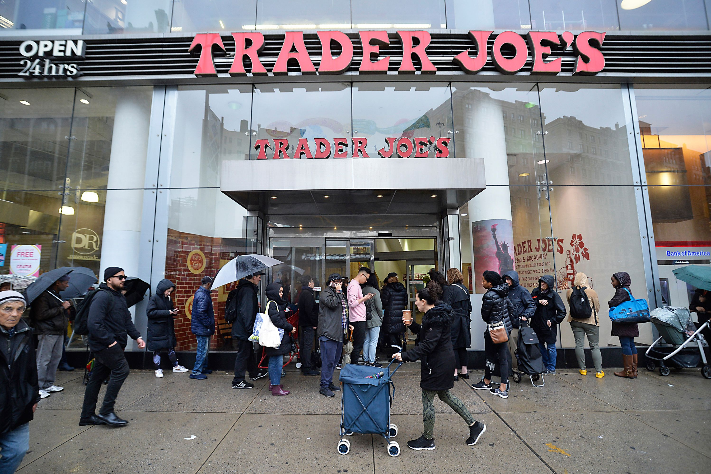
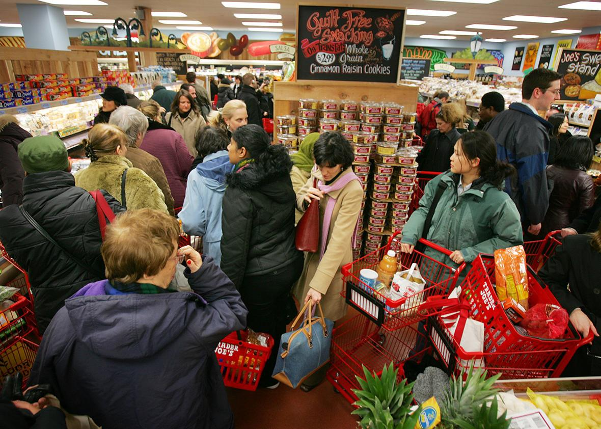
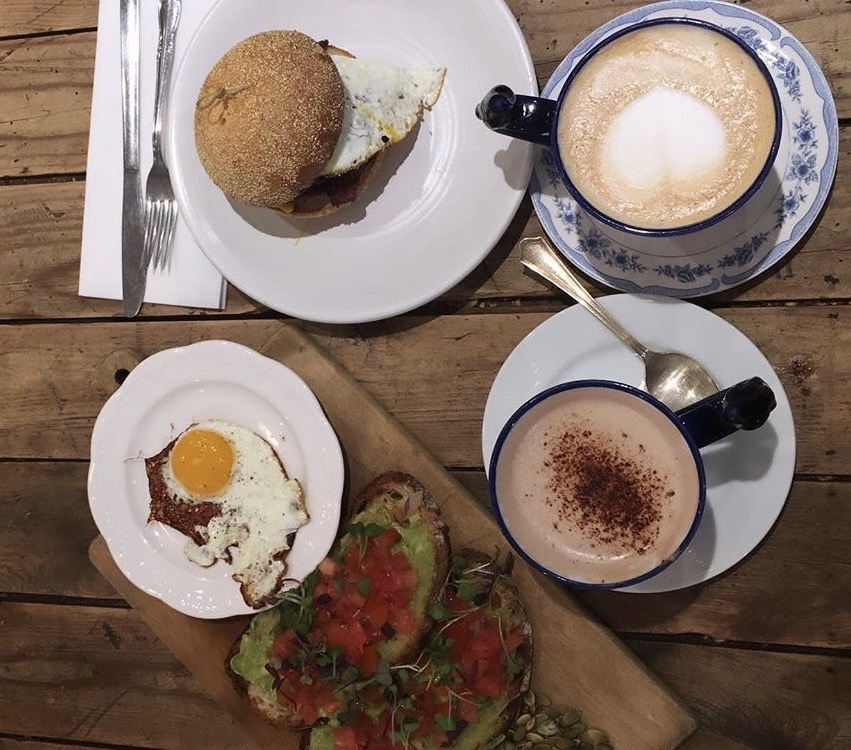

SO YOU'RE TRYING TO SAVE MONEY?
Going to school in New York City and trying to save money can be really hard to do at the same time but The College Kitchen is here to give you as much advice as we can provide. We’re here to share grocery stores, bodegas, and affordable restaurants
near the Lincon Center. We encourage you to leave feedback in our email feature at the bottom of the website, this will help us expand the website to help others who are interested in balling on a budget.
Why Trader Joes are the Best Grocery Stores for College Students


If we could shop at Whole Foods every day I’m sure we would. Whole Foods is great and all but why spend $150 at Whole Foods every week when you could be spending $50 at Trader Joes every week. In my freshman year of college when my parents
dropped me off at school we went to Whole Foods to stock up on some snacks for my dorm room, but because my parents were buying the price point didn’t really matter until I was the one paying for the snacks, which is when I realized
I really wasn’t getting that much bang for my buck. I’m sure all of you have heard of Trader Joes and probably shop there, but for those who have not, it will open so many doors for you. Trader Joes makes cooking fun and all of their
products are unique within themselves, on a good week I leave Trader Joes with protein, fruits, vegetables, and more only spending $50 or less they are also vegan friendly! The great thing about Trader Joes is that everything including
produce is priced the same all over the country. If you haven’t been to Trader Joes and are still shopping at Whole Foods please make the switch, you will thank me later.
COFFEE SHOPS THAT WONT BREAK THE BANK

A latte in New York City can range from $3.00 to $9.00, isn’t that ridiculous? Now, this is from personal experience as this is supposed to be a website from college students for college students. Lattes can get so expensive especially
if you’re ordering nut or oat milk, I guess trying to reduce your carbon footprint can be pretty expensive. To make life a little more inexpensive I’ve made a list below of coffee shops, both chains and individually owned that offer
student discounts and won’t burn a hole in your wallet.
- Sumptown Coffee Roasters (no surcharge for soy or almond milk)
- Birch Coffee (20% off with a student ID)
- Pret A Manger (no surcharge for oat, almond, or soy milk)
- Rex Coffee $4.50 for a latte
- Fair Folks and a Goat offer a $35 monthly membership that is all you can drink coffee, tea, and lattes
More shops will be added when discovered or sent in through our email feature at the bottom! The cheapest option for a latte will always be investing in a Nespresso Machine, they are always having good sales and if you add up
the amount of money you spend on coffee each month it will probably end up being the cost of a basic Nespresso Machine, so if you’re looking into saving money buying a Nespresso machine is always a good way to avoid spending money
on coffee every day.
IF YOU'RE NOT SPLITTING YOU'RE NOT BENEFITING
I’m sure all of you know that splitting a meal can save you a lot of money but there are also some other benefits to splitting even if you’re not trying to save money. When you order an entree at a restaurant you are usually given two
servings of whatever you ordered, I’m sure some of you might know this already but splitting food can also be healthier for you sometimes. Splitting meals with someone also allows more room for dessert, and you don’t always have to
split between two people, another benefit of splitting and sharing is that everyone gets to have a different taste of the restaurant you’re eating at. I know this segment is short but I am just reassuring you that splitting food with
someone can benefit you in so many ways and maybe you can share this information with your friends!
A $10 DINNER
We all know it’s practically impossible to eat at a restaurant in New York City and spend less than $10, I mean not even $10 more like $15. Sometimes you’re just too lazy to cook though and you’ve got to ball on a budget so here are some
good and cheap eats that won’t break the bank!
- Vanessas Dumpling House
- Dollar Slice
- Hale and Hearty Soups
- Empanada Mama
- Taco Truck on the corner of 59th and Columbus
- Breads Bakery + Student Discount
- Any Bodega
- Mexicana Los Hermanos
- Bep Ga
- Cheeky Sandwiches
- Baohaus (one of my personal favorites)
- Punjabi Grocery and Deli
Now, these are just some of The College Kitchen’s favorite cheap meals please email us with your favorite cheap eats so we can add them to the list!
STUDENT DISCOUNTS APPLY TO MORE THAN JUST SHOPPING FOR CLOTHES
Eating out in New York City isn’t always cheap unless you’re getting 99 cent pizza. The website The Student Discount List is a great resource for finding restaurants and stores that offer student discounts. Here are some of the restaurants
they mention that offer student discounts!
- Arby’s offer a student discount if you have a valid student ID with you
- Bingbox Snow Cream has student discounts available
- Bionaturae has student discounts available
- Buffalo Wild Wings
- Burger King
- Chatime
- Chloe’s Soft Serve Fruit
- Chick-fil-A
- Dairy Queen
- Domino’s Pizza
- Harney & Sons
- Luu’s Baguette
- McDonald’s
- OatMeals
- PaTea Bubble Tea
- Papa John’s has a student discount available
- Piccolo Café has student discounts available
- Pizza Hut offer a 10% discount at some of the locations
- Qdoba has a student discount on a few meals
- Subway
- Umami Shoppu
I hope these help!
 EMAIL US AT AKMSATX2@AOL.COM WITH ANY INFORMATION OR IDEAS YOU WOULD LIKE TO SHARE WITH THE COLLEGE KITCHEN
EMAIL US AT AKMSATX2@AOL.COM WITH ANY INFORMATION OR IDEAS YOU WOULD LIKE TO SHARE WITH THE COLLEGE KITCHEN